jsDay 2014
Web Audio API
JS1k 2014

jsDay 2014
Which library did you use?
JS1k
No Libraries Used
JS1k ?
The JavaScript code golfing competition
Rules
- Max. 1024 bytes of JavaScript
- Shim is provided
- No WebGL
1024 bytes
js1kjs1kjs1kjs1kjs1kjs1kjs1kjs1kjs1kjs1kjs1kjs1kjs1kjs1kjs1kjs1kjs1kjs1kjs1kjs1kjs1kjs1kjs1kjs1kjs1kjs1kjs1kjs1kjs1kjs1kjs1kjs1kjs1kjs1kjs1kjs1kjs1kjs1kjs1kjs1kjs1kjs1kjs1kjs1kjs1kjs1kjs1kjs1kjs1kjs1kjs1kjs1kjs1kjs1kjs1kjs1kjs1kjs1kjs1kjs1kjs1kjs1kjs1kjs1kjs1kjs1kjs1kjs1kjs1kjs1kjs1kjs1kjs1kjs1kjs1kjs1kjs1kjs1kjs1kjs1kjs1kjs1kjs1kjs1kjs1kjs1kjs1kjs1kjs1kjs1kjs1kjs1kjs1kjs1kjs1kjs1kjs1kjs1kjs1kjs1kjs1kjs1kjs1kjs1kjs1kjs1kjs1kjs1kjs1kjs1kjs1kjs1kjs1kjs1kjs1kjs1kjs1kjs1kjs1kjs1kjs1kjs1kjs1kjs1kjs1kjs1kjs1kjs1kjs1kjs1kjs1kjs1kjs1kjs1kjs1kjs1kjs1kjs1kjs1kjs1kjs1kjs1kjs1kjs1kjs1kjs1kjs1kjs1kjs1kjs1kjs1kjs1kjs1kjs1kjs1kjs1kjs1kjs1kjs1kjs1kjs1kjs1kjs1kjs1kjs1kjs1kjs1kjs1kjs1kjs1kjs1kjs1kjs1kjs1kjs1kjs1kjs1kjs1kjs1kjs1kjs1kjs1kjs1kjs1kjs1kjs1kjs1kjs1kjs1kjs1kjs1kjs1kjs1kjs1kjs1kjs1kjs1kjs1kjs1kjs1kjs1kjs1kjs1kjs1kjs1kjs1kjs1kjs1kjs1kjs1kjs1kjs1kjs1kjs1kjs1kjs1kjs1kjs1kjs1kjs1kjs1kjs1kjs1kjs1kjs1kjs1kjs1kjs1kjs1kjs1kjs1kjs1kjs1kjs1kjs1kjs1kjs1kjs1kjs1kjs1kjs1kjs1kjs1kjs1kjs1kjs1kjs1kjs1kjs1kjs1kjs1kjs1kjs1kjs1kjs1kjs1k
Why?
- Constraints pose a challenge
- Explore JS
- Learn new techniques
JS1k 2013

JS1k 2014
Ray Marching
ℝ→ℝ
Functions in 1D
ℝ2→ℝ
Functions in 2D
Plane
f (x,y) = 1
Sine Waves
f (x,y) = a∙sin(x)
a ∈ ℝ
Sine + Cosine
f (x,y) = a∙sin(x) + b∙cos(y)
a,b ∈ ℝ
Trigonometric Land
f (x,y) = (...)
Ray Marching a Terrain
- Start ray at point of view (POV)
- Follow ray in fixed steps until terrain is hit
- Render pixel on virtual plane
- Abort after predefined number of steps
Ray Marching a Terrain

Outer Loop
for (y = 0; y < height; y++) {
for (x = 0; x < width; x++) {
// 1) march ray for (x,y)
// 2) render pixel at (x,y)
}
}
Marching a Ray
brightness = -1;
for (i=imin; i<imax; i+=stepsize) {
p = (…) // calculate p.x, p.y, p.z
fz = f(p.x,p.y); // get terrain height at (p.x, p.y)
if (fz > p.z) {
brightness = fz*250|0;
break;
}
}
// paint pixel at (x,y);
Painting a Pixel
function pp(x, y, brightness) {
c.fillStyle = 'rgb(0,'+(brightness==-1?0:brightness)+',0)';
c.fillRect(x*pixelSizeX, y*pixelSizeY, pixelSizeX, pixelSizeY);
}
Perlin Noise
Image: iñigo quilez (iq)
Distance Field
Ray Marching a Distance Field
Distance Estimator (DE)
- A DE is a function
- A DE returns the distance to an object